Web app · Diploma thesis
Festivals
all in one solution for music festival goers
01 About
Since I was a little kid, I've always liked music - especially house music and its subgenres. So naturally when I was old enough I started visiting music festivals. But one thing that always bothered me was how hard it is to find good festival related info. So I came up with an idea, that brings searching and exploring festivals into one place, combined with different options to connect with other festival goers and many other cool features that you'll see below.
02 Stack
- Core
- NuxtDjango + DRFPostgreSQL
- Styling
- Vuetify
- Maps platform
- Mapbox
- Live chat
- Pusher Channels
03 Features
- Discovering and searching festivals
- Selected festival info
- Nearby accommodation search
- Route to festival planner
- Dedicated forum for each festival
- Public chat rooms
- Finding people with same interests and contacting them with private chats
These functionalities provide the user with a complete solution in one place. All that's left is to buy the tickets at the official seller.
04 Planning
In the first stage of planning, I defined the app’s functionalities and created a use case diagram.
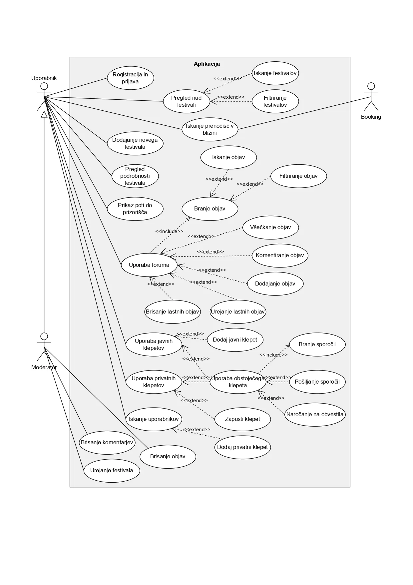
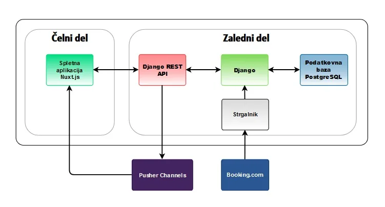
The next step was to create a database that supports all the functionalities, with 18 tables in total, that we can split into 4 parts based on what their goal is:
- User table - allows user to signup/login and also connect to other tables, so they can like, post, comment...
- Music festival tables - contain info about festivals, user favourites, genres, user favourite genres, festival genres...
- Forum tables - contain info about posts, comments and who liked them.
- Chat tables - contain chat info, chat members, messages and notifications.
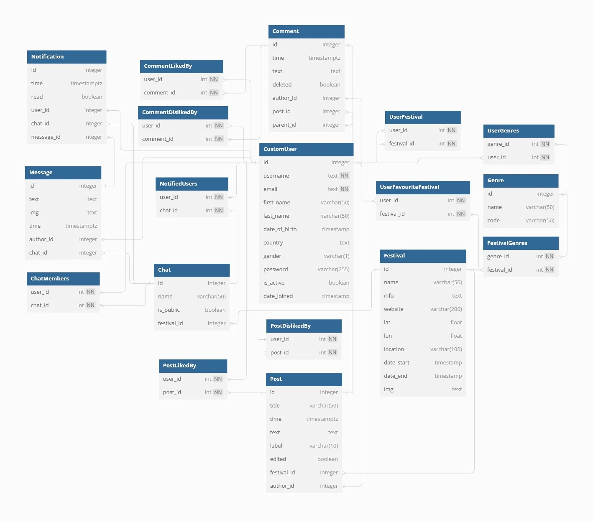
App gallery
Swipe, use the arrows or click to enlarge
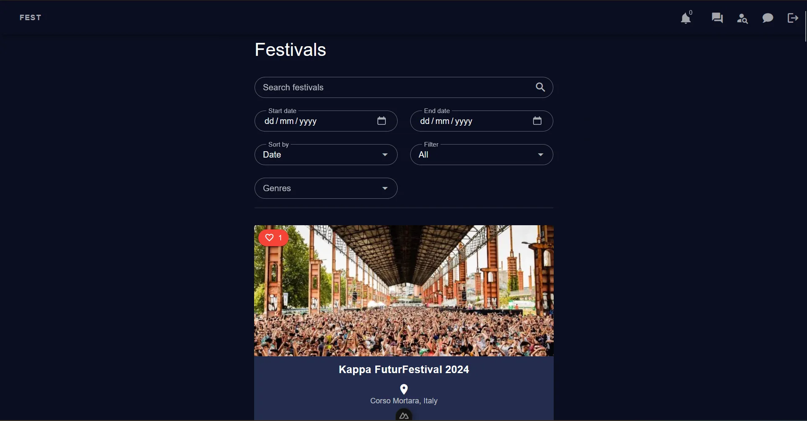
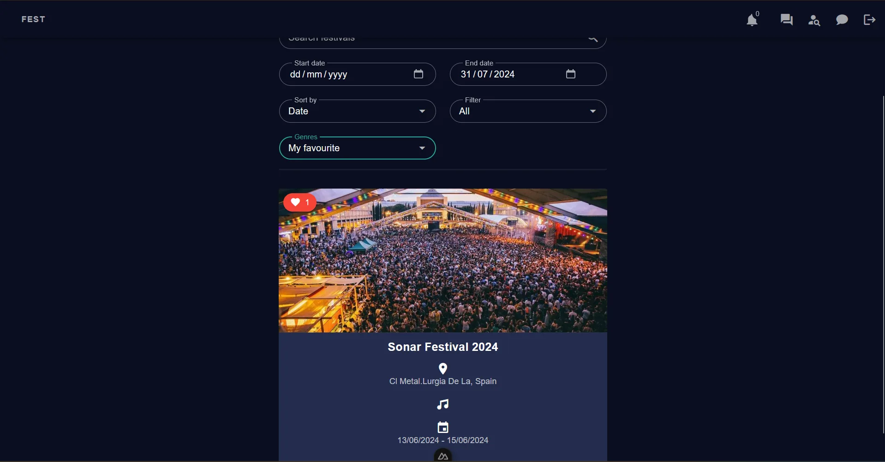
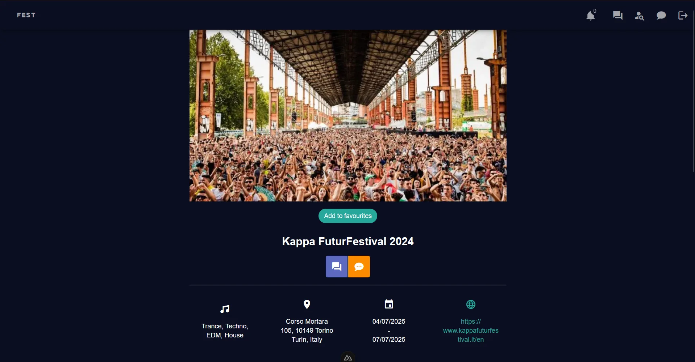
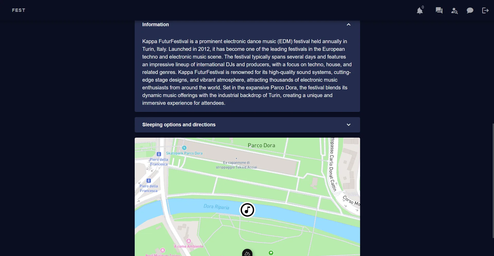
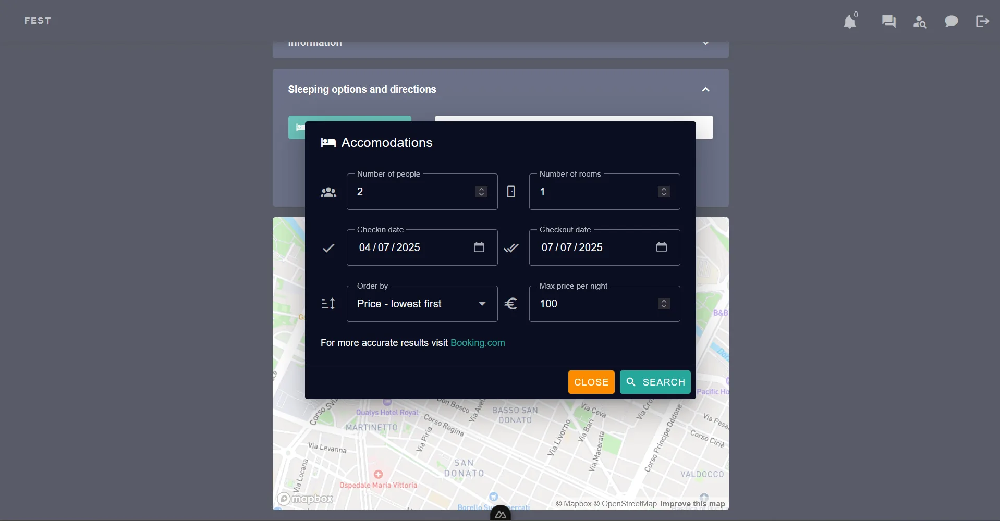
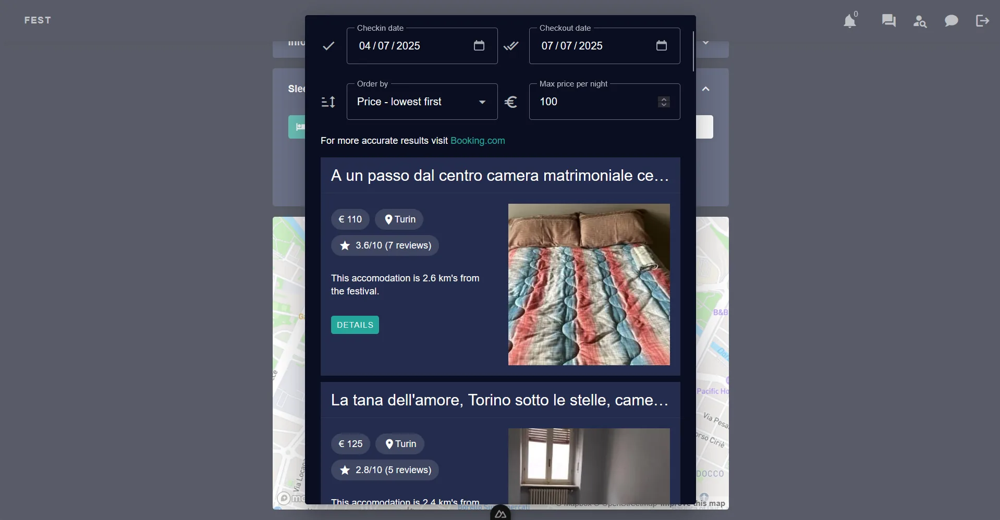
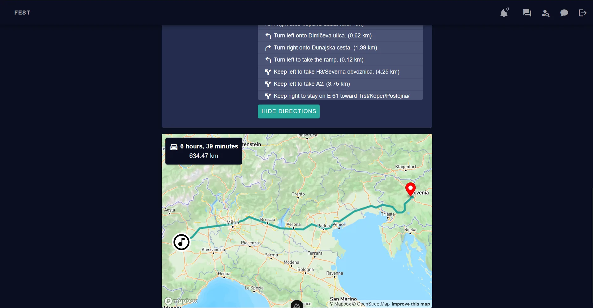
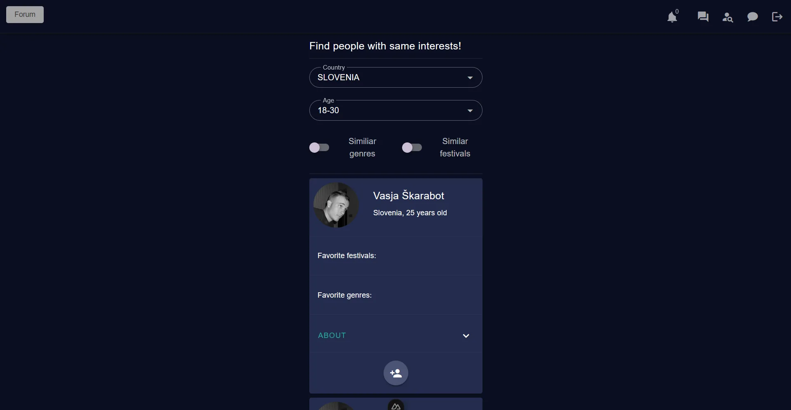
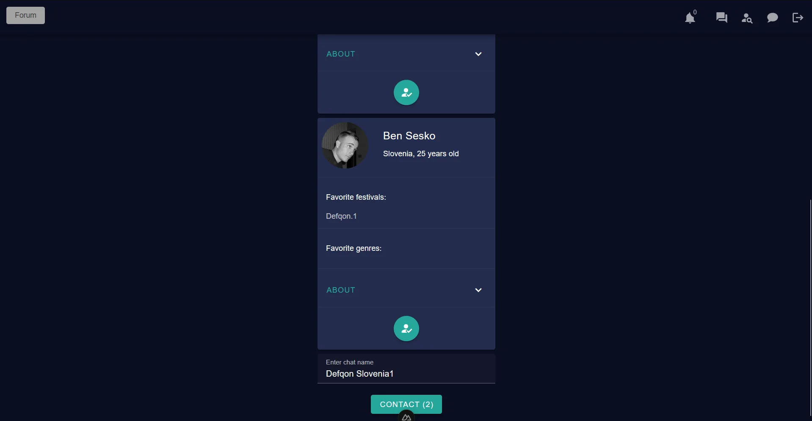
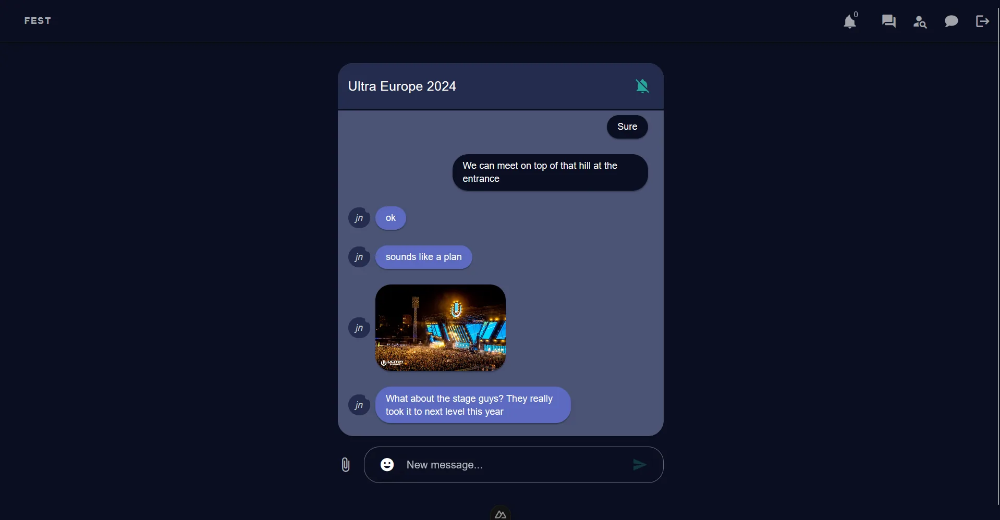
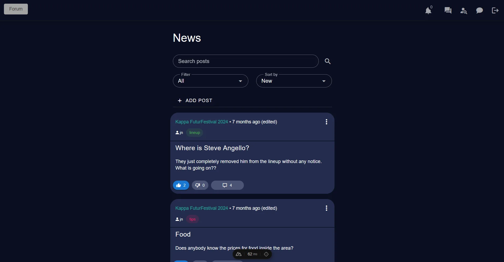
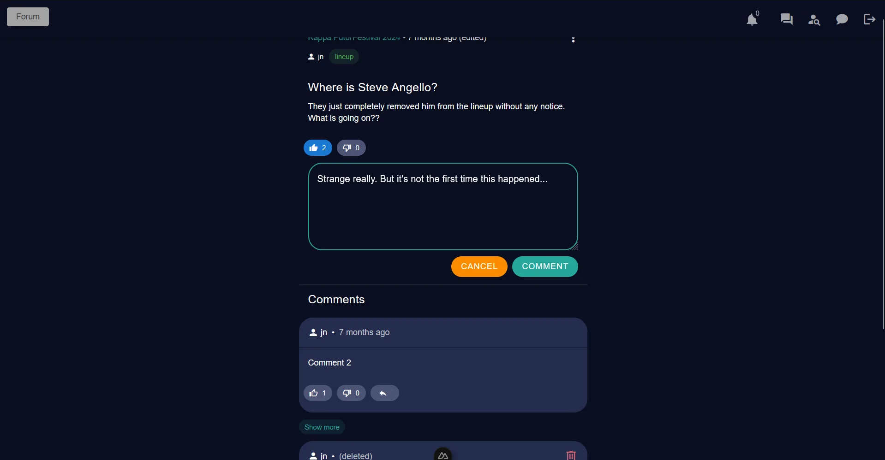
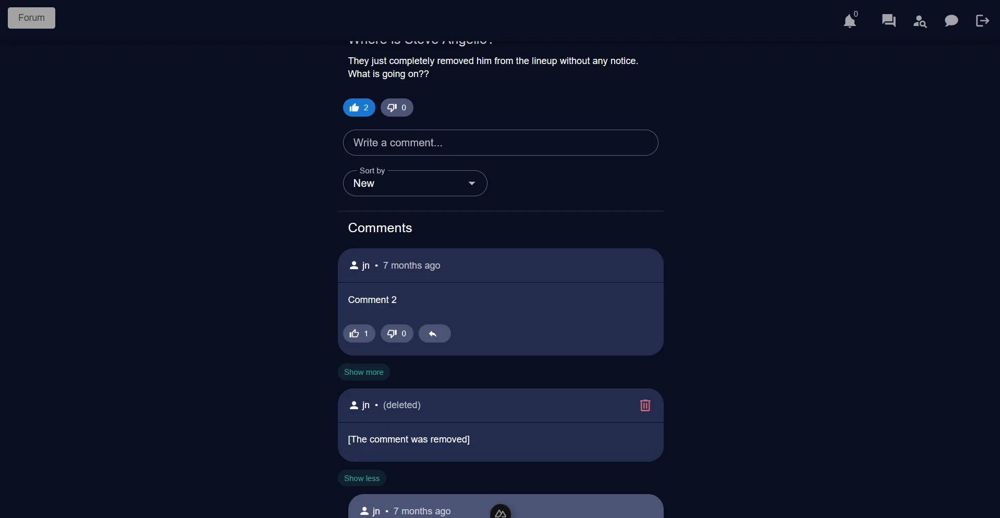
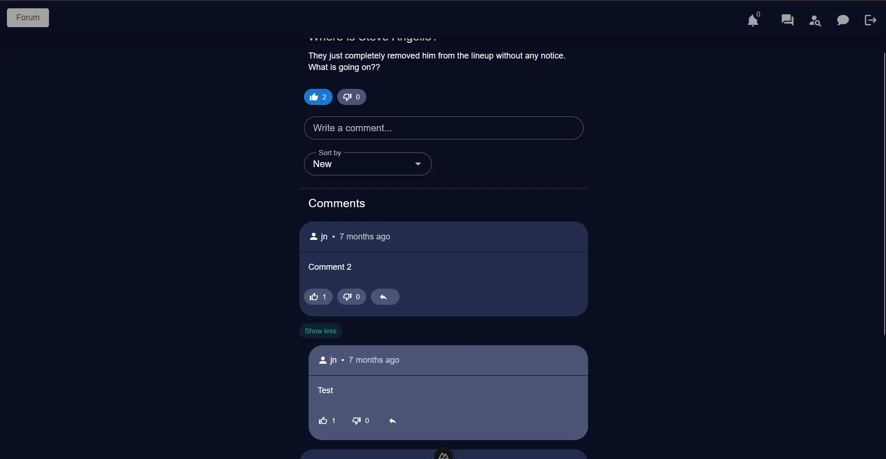